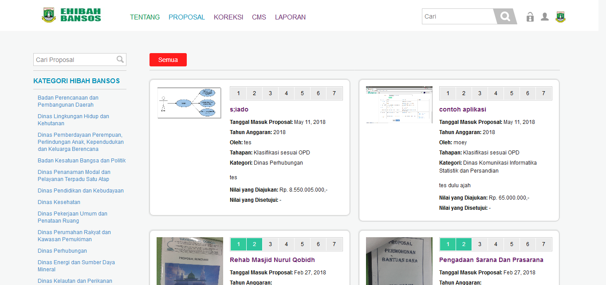
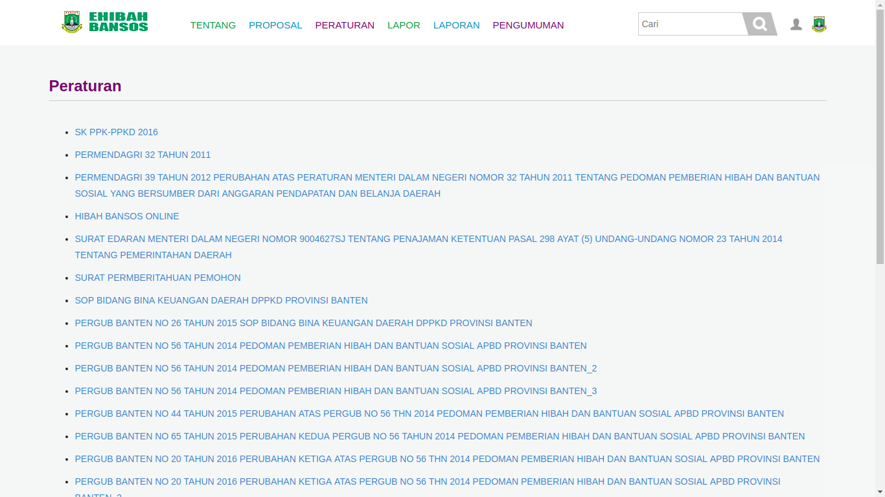
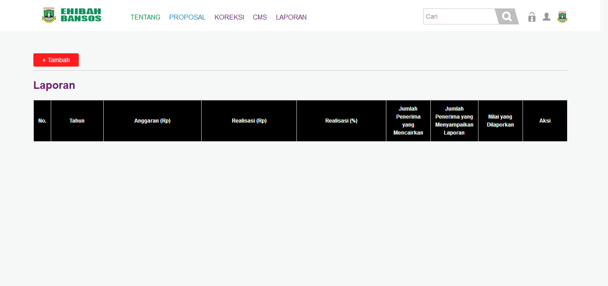

Daftar Isi
- Daftar Isi
- 1. Tampilan Awal E-hibahbansos
- 2. Tampilan Superadmin
- 3. Tampilan Pendaftar
- 4. Tampilan OPD
- 5. Tampilan Inspektorat
- 6. Tampilan TAPD
E-hibahbansos adalah aplikasi yang berbasis web yang akan dipakai oleh setiap golongan masyarakat dan pihak terkait berhubungan dengan pengajuan dana hibah dan bantuan sosial dan proses-proses yang terdapat untuk mencairkan dana hibah atau bansos. Deskripsi Umum kebutuhan aplikasi yang akan diimplementasikan meliputi semua informasi yang bersifat teknis dan menjadi acuan dalam pengembangan apliksi.
Berikut ini adalah tampilan - tampilan yang terdapat didalam apliaksi E-hibahbansos:
1. Tampilan Awal E-hibahbansos
 Pada saat membuka aplikasi maka user akan ditampilkan halaman awal aplikasi yang berisikan mengenai info-info mengenai aplikasi E-hibahbansos.
Pada saat membuka aplikasi maka user akan ditampilkan halaman awal aplikasi yang berisikan mengenai info-info mengenai aplikasi E-hibahbansos.
1.1 Tampilan Tentang
 Pada modul TENTANG ini user dapat mengetahui informasi mengenai aplikasi E-hibahbansos seperti apa itu e-hibahbansos, tujuan dan tahapan-tahapan yang terdapat di dalam aplikasi E-hibahbansos.
Pada modul TENTANG ini user dapat mengetahui informasi mengenai aplikasi E-hibahbansos seperti apa itu e-hibahbansos, tujuan dan tahapan-tahapan yang terdapat di dalam aplikasi E-hibahbansos.
1.2 Proposal
 Pada modul PROPOSAL ini user dapat melihat proposal-proposal yang sudah terinput kedalam apliaksi E-hibahbansos dan sudah berada pada tahapan mana proposal tersebut yang ditunjukan dengan angka 1 sampai 7 pada proposal tersebut.
{kind=link}
1.3 Peraturan
 Pada modul PERATURAN ini user dapat melihat peraturan-peraturan yang menjadi dasar dalam pembuatan aplikasi E-hibahbansos.
{kind=link}
1.4 Lapor
 Pada modul LAPOR ini user dapat membuat pelaporan mengenai kendala atau masalah yang dihadapi oleh user dalam penggunaan aplikasi.
Pada modul LAPOR ini user dapat membuat pelaporan mengenai kendala atau masalah yang dihadapi oleh user dalam penggunaan aplikasi.
1.5 Laporan
 Pada modul LAPORAN ini user dapat melihat laporan-laporan yang telah dikirim oleh user kedalam aplikasi.
Pada modul LAPORAN ini user dapat melihat laporan-laporan yang telah dikirim oleh user kedalam aplikasi.
1.6 Pengumuman
 Pada modul PENGUMUMAN ini user dapat melihat pengumuman yang dikeluarkan oleh operator E-hibahbansos.
Pada modul PENGUMUMAN ini user dapat melihat pengumuman yang dikeluarkan oleh operator E-hibahbansos.
1.7 Login
 Tampilan login ini berisikan 2 field yang harus diisi oleh user untuk masuk sebagai akun yang diinginkan.
Tampilan login ini berisikan 2 field yang harus diisi oleh user untuk masuk sebagai akun yang diinginkan.
1.8 Registrasi
 Modul REGISTRASI ini digunakan untuk pendaftar yang belum memiliki akun E-hibahbansos.
Modul REGISTRASI ini digunakan untuk pendaftar yang belum memiliki akun E-hibahbansos.
2. Tampilan Superadmin
2.1 Tampilan Awal Superadmin
 Tampilan awal superadmin ini dapat diakses ketika user login dengan id dan password superadmin. didalam tampilan ini terdapat beberapa modul seperti Koreksi, CMS dan Laporan
Tampilan awal superadmin ini dapat diakses ketika user login dengan id dan password superadmin. didalam tampilan ini terdapat beberapa modul seperti Koreksi, CMS dan Laporan
2.2 Tampilan Koreksi
 Modul Koreksi ini dapat diakses oleh superadmin dengan cara mengklik tulisan “koreksi” di bagian atas aplikasi. Modul ini dapat digunakan untuk mengkoreksi data alur kegiatan E-hibahbansos
Modul Koreksi ini dapat diakses oleh superadmin dengan cara mengklik tulisan “koreksi” di bagian atas aplikasi. Modul ini dapat digunakan untuk mengkoreksi data alur kegiatan E-hibahbansos
2.3 Tampilan CMS (Content Management System)
 Modul CMS ini dapat diakses dengan mengklik tulisan “CMS” dibagian atas aplikasi. Modul CMS ini digunakan untuk mengatur konten-konten yang terdapat diaplikasi seperti Manajemen Pengguna, Manajemen Konten dan Log Pengguna.
Modul CMS ini dapat diakses dengan mengklik tulisan “CMS” dibagian atas aplikasi. Modul CMS ini digunakan untuk mengatur konten-konten yang terdapat diaplikasi seperti Manajemen Pengguna, Manajemen Konten dan Log Pengguna.
2.4 Tampilan Laporan
 Modul Laporan ini dapat diakses dengan cara mengklik tulisan “Laporan” pada bagian atas aplikasi. Didalam modul ini superadmin dapat melihat laporan mengenai proposal yang telah diproses di aplikasi E-hibahbansos.
{kind=link}
3. Tampilan Pendaftar
 Tampilan awal Pelapor ini dapat diakses ketika user login dengan id dan password yang sudah daftar sebelumnya. didalam tampilan ini terdapat beberapa modul seperti Daftar, LPJ.
Tampilan awal Pelapor ini dapat diakses ketika user login dengan id dan password yang sudah daftar sebelumnya. didalam tampilan ini terdapat beberapa modul seperti Daftar, LPJ.
3.1 Tampilan Daftar
 Modul daftar ini dapat diakses dengan cara mengklik tulisan “Daftar” pada bagian atas aplikasi. Didalam modul ini pelapor dapat membuat proposal yang akan diajukan untuk OPD terkait di aplikasi E-hibahbansos.
Modul daftar ini dapat diakses dengan cara mengklik tulisan “Daftar” pada bagian atas aplikasi. Didalam modul ini pelapor dapat membuat proposal yang akan diajukan untuk OPD terkait di aplikasi E-hibahbansos.
3.2 Tampilan LPJ
 Modul LPJ ini dapat diakses dengan cara mengklik “LPJ” pada bagian atas aplikasi Ehibah-Bansos. sehingga akan memunculkan tampilan banyaknya proposal yang diajukan di aplikasi ehibah-bansos.
Modul LPJ ini dapat diakses dengan cara mengklik “LPJ” pada bagian atas aplikasi Ehibah-Bansos. sehingga akan memunculkan tampilan banyaknya proposal yang diajukan di aplikasi ehibah-bansos.
4. Tampilan OPD
Tampilan awal OPD ini dapat diakses ketika user login dengan id dan password OPD. didalam tampilan ini terdapat beberapa modul seperti Daftar, Cek berkas, dan Pemberian rekomendasi.
{kind=link}
4.1 Tampilan Daftar
 Modul daftar ini dapat diakses dengan cara mengklik tulisan “Daftar” pada bagian atas aplikasi. Didalam modul ini OPD dapat membuat proposal yang akan diajukan melalui OPD terkait di aplikasi E-hibahbansos.
Modul daftar ini dapat diakses dengan cara mengklik tulisan “Daftar” pada bagian atas aplikasi. Didalam modul ini OPD dapat membuat proposal yang akan diajukan melalui OPD terkait di aplikasi E-hibahbansos.
4.2 Tampilan Cek Berkas
 Modul cek berkas ini dapat diakses dengan cara mengklik tulisan “Cek berkas” pada bagian atas aplikasi. Didalam modul ini setiap OPD dapat melihat dan mengecek kembali apakah proposal yang masuk sudah sesuai atau belum untuk di ajukan.
Modul cek berkas ini dapat diakses dengan cara mengklik tulisan “Cek berkas” pada bagian atas aplikasi. Didalam modul ini setiap OPD dapat melihat dan mengecek kembali apakah proposal yang masuk sudah sesuai atau belum untuk di ajukan.
4.3 Tampilan Pemberian Rekomendasi
 Modul pemberian rekomendasi ini dapat diakses dengan cara mengklik tulisan “pemberian rekomendasi” pada bagian atas aplikasi. Didalam modul ini setiap OPD dapat memberikan Rekomendasi untuk setiap proposal yang sudah sesuai dengan persyaratan yang ditentukan untuk melanjutkan ke proses/tahap selanjutnya.
Modul pemberian rekomendasi ini dapat diakses dengan cara mengklik tulisan “pemberian rekomendasi” pada bagian atas aplikasi. Didalam modul ini setiap OPD dapat memberikan Rekomendasi untuk setiap proposal yang sudah sesuai dengan persyaratan yang ditentukan untuk melanjutkan ke proses/tahap selanjutnya.
5. Tampilan Inspektorat
 Tampilan awal Inspektorat ini dapat diakses ketika user login dengan id dan password Inspektorat. didalam tampilan ini terdapat modul Rekomendasi dan Verifikasi.
Tampilan awal Inspektorat ini dapat diakses ketika user login dengan id dan password Inspektorat. didalam tampilan ini terdapat modul Rekomendasi dan Verifikasi.
5.1 Tampilan Rekomendasi dan Verifikasi
 Modul Rekomendasi dan Verifikasi ini dapat diakses dengan cara mengklik tulisan “rekomendasi dan verifikasi” pada bagian atas aplikasi. Didalam modul ini Inspektorat dapat melihat setiap Proposal yang masuk dan mengecek setiap proposal, serta dapat memberikan pengajuan kepada setiap proposal yang sudah melengkapi dan melewati tahap-tahap sebelumnya untuk melanjutkan ke tahap selanjutnya.
Modul Rekomendasi dan Verifikasi ini dapat diakses dengan cara mengklik tulisan “rekomendasi dan verifikasi” pada bagian atas aplikasi. Didalam modul ini Inspektorat dapat melihat setiap Proposal yang masuk dan mengecek setiap proposal, serta dapat memberikan pengajuan kepada setiap proposal yang sudah melengkapi dan melewati tahap-tahap sebelumnya untuk melanjutkan ke tahap selanjutnya.
6. Tampilan TAPD
Tampilan awal TAPD ini dapat diakses ketika user login dengan id dan password TAPD. Didalam tampilan ini terdapat beberapa modul seperti Verifikasi, dan Generate.
{kind=link}
6.1 Tampilan Verifikasi
Modul Verifikasi ini dapat diakses dengan cara mengklik tulisan “verifikasi” pada bagian atas aplikasi. Didalam modul ini TAPD dapat melihat dan mengecek setiap proposal yang masuk, serta TAPD dapat memberikan verifikasi untuk setiap proposal yang sudah melewati proses tahap-tahap dan melengkapi persyaratan untuk dilanjutkan ke proses selanjutnya.
{kind=link}
6.2 Tampilan Generate
 Modul Generate ini dapat diakses dengan cara mengklik tulisan “Generate” pada bagian atas aplikasi. Didalam modul ini TAPD dapat
melihat seluruh proposal yang masuk dari berbagai OPD dan Status dari Proposal tersebut.
Modul Generate ini dapat diakses dengan cara mengklik tulisan “Generate” pada bagian atas aplikasi. Didalam modul ini TAPD dapat
melihat seluruh proposal yang masuk dari berbagai OPD dan Status dari Proposal tersebut.